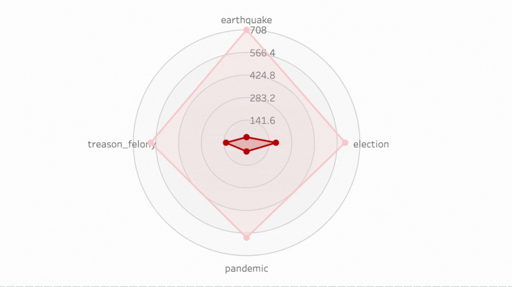
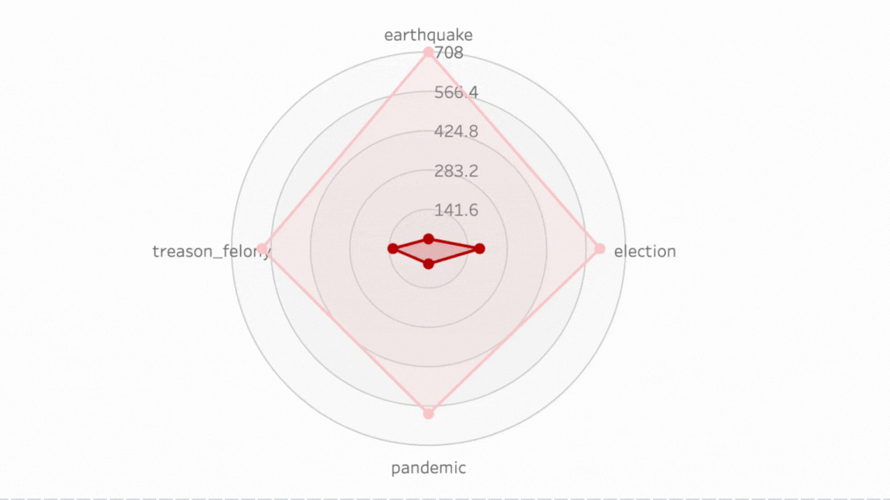

The data visualization consists of two parts:
Scrapped Data Count Among the World Map:
This is a choropleth map that highlights various countries in different shades of red, indicating the amount of data scrapped from each country’s trend videos. The intensity of the colour appears to correlate with the quantity of data: the darker the shade, the more data has been collected.
Countries such as India, Saudi Arabia, and Spain are among those highlighted, suggesting significant volumes of data were scrapped from these locations.
Detected Hate Speech Over Total Scrapped Data From the Countries Bar Chart:
This bar chart shows the count of hate speech detected in comparison to non-offensive content for several countries: India, Saudi Arabia, Spain, Turkey, and the United Kingdom.
Each country has two bars, with the red bar representing the amount of hate speech and the light salmon-coloured bar representing non-offensive content.
The chart indicates that India has the highest number of hate speech counts detected among the countries listed, followed closely by Saudi Arabia, and then Spain. Turkey has a relatively lower count of hate speech, and the United Kingdom has the lowest count among the five countries shown.
Together, these visualizations indicate not only the prevalence of hate speech in these countries as detected in the scrapped data but also provide a visual comparison of the proportion of hate speech to non-offensive content from the data collected.
Network Graph of Sentimental Analysis Distribution of Different Languages Data Set

These word clouds represent the most frequently occurring words in comments that were identified as hate speech on YouTube from different countries: Saudi Arabia, the United Kingdom, Spain, India, and Turkey. Here are some insights based on each word cloud:
Saudi Arabia: The word cloud is predominantly in Arabic. Frequent words are likely related to topics of conversation that elicited hate speech, but without context or understanding of Arabic, it’s hard to discern the exact subjects or sentiments.
United Kingdom: The English words here include some profanities, names (such as "John" and "Fury," possibly referring to the boxer Tyson Fury), and other terms like "embarrassing," "disgusting," and "never." These words suggest topics related to sports, public figures, and general expressions of strong negative sentiment.
Spain: The Spanish word cloud includes terms like "politicos" (politicians), "drones" (thieves), "corrupción" (corruption), and "derecha" (right, often used to refer to right-wing politics). It appears to reflect a discussion surrounding politics and social issues, with a mix of negative sentiments.
India: This cloud includes both English and Hindi words, with names like "Gujral" and "Nita," phrases like "Congratulations," and "kind," and some Hindi words, which suggest a mix of positive and negative comments on various subjects.
Turkey: The Turkish word cloud contains terms such as "Islam," "Allah," "kadınlar" (women), and "çok" (very/much), indicating discussions likely related to religion, gender issues, and emphatic sentiments.
Word clouds are a qualitative data visualization tool that can show the frequency of word occurrence. The larger and bolder the word appears in the cloud, the more often it has been mentioned in the source data.
Global Average Sentiment Score Over Time - Trend Videos:
The final line chart shows a declining average sentiment score over a short period (from February to March), specifically for trending videos.
This steady decline may indicate increasing negativity in the comments on trending videos, which could be a result of various factors, like the content of the videos themselves, global events affecting public mood, or other external influences.
Sankey Diagram Flow of the Local Communities in Turkey
SunBurnt Chart Distribution of Communities and Detected Speech Severity

These visualizations present data related to hate speech detection in various communities in Turkey:
Sankey Diagram Flow of the Local Communities in Turkey:
The Sankey diagram is used to show the flow of hate speech through different communities. The width of the bands suggests the volume of hate speech associated with each community.
The communities listed are LGBTQ+, Kurds, Football, FETO, and Alevis.
There are two main categories for the speech: "hate speech" and "severe." A note indicates that 67.7% of hate speech is considered to be 100.0% severe within the published dataset of 765 entries.
Sunburst Chart Distribution of Communities and Detected Speech Severity:
This sunburst chart appears to break down the severity of hate speech by the community, with different layers possibly indicating the level of severity from less severe (outer rings) to more severe (inner rings).
The chart suggests that the LGBTQ+ community experiences the highest level of the most severe hate speech, followed by Kurds (ethnicity), and then FETO (known as the treasonous felony that happened in Turkey in 2016).
Detected Hate Speech Rate Among Communities Bar Chart:
This bar chart displays the count of hate speech cases detected among different communities.
The 'FETO' community has the highest count of detected hate speech, followed by the 'LGBTQ+' community. 'Alevis' and 'Kurds' have lower counts, and 'Football' has the least detected hate speech among the communities shown.
Average Sentiment Score Over Time:
This line chart tracks the sentiment score over several years, with each point representing the average sentiment score for a given month.
The sentiment score seems to fluctuate significantly, with peaks and troughs indicating periods of higher and lower average sentiment.
We see a general downward trend starting around mid-2022, suggesting an increase in negative sentiment over time.
Correlation Matrix:
This heat map shows the correlation between three variables: like count, sentiment score, and a binary variable for hate speech (indicating the presence or absence of hate speech).
The sentiment score and hate speech binary have a very high positive correlation (0.94), suggesting that when the sentiment score is high, the likelihood of the comment being classified as hate speech is also high. This could imply that the sentiment analysis is picking up on strong negative sentiments such as hate speech.
The correlation between likes and the sentiment score and between likes and hate speech binary is almost negligible (around -0.03 and -0.02), indicating that there is no meaningful linear relationship between likes and sentiment or likes and hate speech in this dataset.

Sankey Diagram Flow of the Societal Events Happened in Turkey
Radar Chart Distribution of Societal Events and Detected Speech Severity
 

Interactive Chronology Map of Societal Events and Detected Hate Speech Flow
This data visualization consists of two main parts:
Sankey Diagram Flow of Societal Events in Turkey: The Sankey diagram appears to illustrate the flow of several societal events such as "treason_felony," "pandemic," "election," and "earthquake," into categories of speech, namely "not-offensive" and "hate speech." The thickness of the flows likely represents the volume or frequency of these discussions categorized as such. "Hate speech" is highlighted, indicating a focus on this type of speech in the context of these events.
Radar Chart Distribution of Societal Events and Detected Speech Severity: The radar chart on the right side of the image shows different societal events plotted on a radar chart. The events labelled are "treason_felony," "election," "pandemic," and "earthquake." Each event seems to be plotted based on the severity of speech detected about that event. The further from the centre, a point is, the more severe the speech associated with that event. In this chart, "earthquake" seems to have the highest level of severe speech, followed by "election," "pandemic," and "treason_felony."
The bottom part of the visualization, labelled "Interactive Chronology Map of Societal Events and Detected Hate Speech Flow," suggests there is an interactive element to the chart where users can explore the data in a chronological context, potentially observing how hate speech and societal events have interacted over time. The nodes represent different levels of detected hate speech, with the size indicating the amount or intensity of hate speech detected.
Focused on Election to Examine Better
Pre-Election Period (January 1, 2023 - June 30, 2023):
Average Sentiment Score: 0.178
Percentage of Posts Detected as Hate Speech: 14.98%
During-Election Period (July 1, 2023 - July 31, 2023):
Average Sentiment Score: 0.188
Percentage of Posts Detected as Hate Speech: 15.84%
Post-Election Period (August 1, 2023 - December 31, 2023):
Average Sentiment Score: 0.162
Percentage of Posts Detected as Hate Speech: 13.36%
Average Sentiment Score Over Time - Election Event:
Another line chart specifically focuses on the sentiment over time around an election event.
The sentiment scores appear to be more volatile during this period, with some significant peaks suggesting brief periods of positive sentiment or perhaps intense negative sentiment, if the sentiment score is inversely related to positivity.